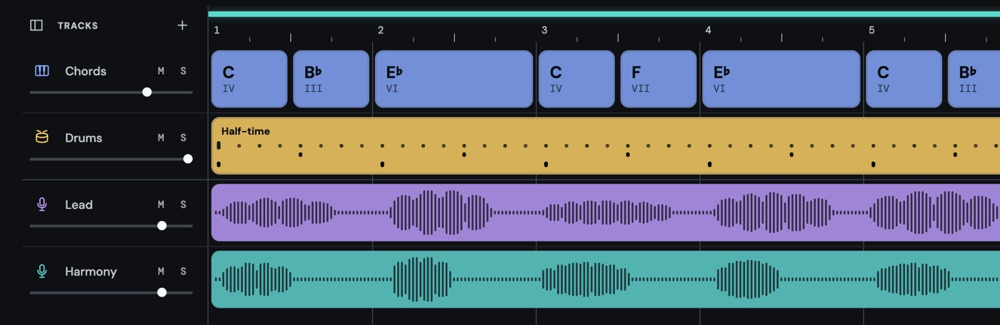
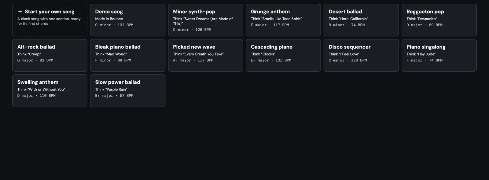
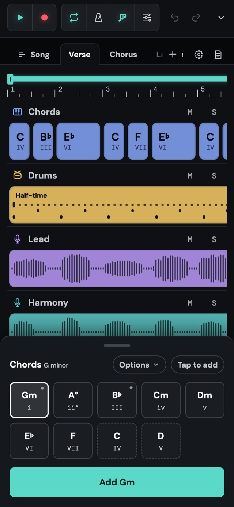

Chords, a beat and your voice
Tap in chords that fit your key and hear them straight away. Pick a drum beat to go with them, from rock to disco to reggaeton. Then press record and sing over it. Every take is kept, so you can choose your favourite.
 Bounce
Open the app →
Bounce
Open the app →
Bounce is a simple sketchpad for songwriters. Try out chords, add a beat, sing over it and write down the words, right in your browser. When it’s ready, take it to your recording app to finish it.
Start a songFreeNo accountNothing to install

Tap in chords that fit your key and hear them straight away. Pick a drum beat to go with them, from rock to disco to reggaeton. Then press record and sing over it. Every take is kept, so you can choose your favourite.

Lyrics sit next to the song, part by part, with the chords above them. A count of syllables beside each line helps your lines fit the tune, and the words follow along as the song plays.

Put your verses and choruses in order, repeat them, and lift the last chorus into a new key for a big finish. You can see how long the song is and how it flows at a glance.

Stuck on a blank page? Open one of the ready-made songs, inspired by songs everyone knows, listen, and make it your own. Or start from nothing and pick your first chord.

Everything works on a phone, with a pad for tapping in chords and a big record button. Catch the idea wherever it turns up.

Download your sketch as audio to share it, or with each part as its own file, ready to finish in GarageBand, Logic or any music app.
There’s nothing to sign up for. Your songs save in your browser on this device, and you can back them up to a file whenever you like.
FreeNo accountNothing to install